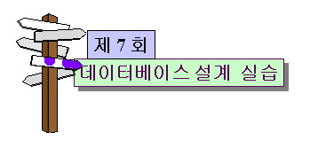

 |
|||||||||||||||||||||||||||||||||||||||||||||||||||||||||||||||||||||||||||||||||||||||||||||||||||||||||||||||||||||||||||||||||||||||||||||||||||||||||||||||||||||||||||||||||||||||||||||||||||||||||||||||||||||||||||||||||||||||||||||||||||||||||||||||||||||||||||||||||||||||||||||||||||||||||||||||||||||||||||||||
목 차
|
시작하기전에....제 7회 "데이터베이스 설계 실습" 강의는 "제 5 회 관계형 데이터베이스 설계"에서 이론적으로 학습한 데이터베이스 설계 방법이론을 "강의시스템"을 대상으로 적용시키는 내용을 다룹니다. 이번 강의 내용 결과인 강의시스템 데이터베이스 스키마와 제약조건은 다음 회인 강의 "제 8 회 ACCESS를 이용한 데이터베이스 구축 및 활용"에서 이용될 예정입니다. 여러분들은 "제 5 회 관계형 데이터베이스 설계" 내용과 비교해 가면서 다음 사항들을 유념하여 강의해 임해주길 바랍니다.
|
||||||||||||||||||||||||||||||||||||||||||||||||||||||||||||||||||||||||||||||||||||||||||||||||||||||||||||||||||||||||||||||||||||||||||||||||||||||||||||||||||||||||||||||||||||||||||||||||||||||||||||||||||||||||||||||||||||||||||||||||||||||||||||||||||||||||||||||||||||||||||||||||||||||||||||||||||||||||||||||
본 강의에서는 제 5 회 관계형 데이터베이스 설계에서 다룬 관계형 데이터베이스 설계 단계들을 하나씩 따라가며 이론적으로 설명된 설계 방법이 실제로 어떻게 진행되는가를 보이고자 한다. 이미 제 5 회 관계형 데이터베이스 설계에서 소개된 설계 절차는 다음 그림 7-1을 따라 행해짐을 상기하자.
존 강의에서는 그림 7-1의 절차에 따라 강의 시스템을 대상으로 실제로 데이터베이스를 설계해 보도록 한다.(여러분들은 설계시의 각 단계들이 대하여 제 5 회 관계형 데이터베이스 설계 강의 내용을 차례대로 비교해가면서 학습에 임해주길 바란다). 1. 실세계 정의단계 1. 실세계를 문장으로 자연스럽게 정의한다.다음의 표 7-1은 강의시스템을 문장으로 표현한 것이다.
표 7-1은 실세계인 강의시스템의 구성요소들과 이들간의 관계를 자연스럽게 문장으로 표현한 것이다. 또한 강의시스템의 구성요소들 사이에 존재하는 규칙(제약조건)들도 문장으로 표현되었다. 표 7-1의 강의시스템 정의 문장을 강의시스템 구성요소, 구성요소 특성, 구성요소들간의 관계, 관계 특성(관계의 속성을 의미함), 제약조건 등으로 문장들을 분류하면 다음 표 7-2와 같다.
표 7-2에서 구분번호 4번과 5번 문장들은 구성요소들간의 관계를 나타냄과 동시에 제약조건을 포함하고 있음을 주시하자. 2. 강의시스템의 개념적 설계단계 2. 실세계를 구성하는 개체 집합을 식별하고 표현한다.단계 3. 각 개체집합이 강성 개체인지 약성 개체인지를 구분하고 표현한다.강의시스템에서 실세계를 구성하는 개체 집합은 표 7-2에서 분류된 구성요소들이 된다. 따라서 학과, 교수, 학생, 강좌, 교과목, 강의실, 교재 등이 개체 집합으로 식별되며 다음 그림 7-2와 같이 각 개체 집합은 사각형 형태로 표현된다.
단계 4. 각 개체 집합의 속성을 식별하고 표현한다.
그림 7-3에서 학생과 교수 개체 집합에서 소속학과에 대한 속성이 표현되지 않았음을 주시하자. 사실 상, 학생과 교수 개체 집합의 소속학과는 학과 개체 집합간의 관계에 의해 형성된다. 이 단계에서의 속성 식별은 ER 다이어그램 내에 존재하는 다른 개체 집합들과의 관계성을 고려하지 않고 개체 집합 고유의 속성만 고려하도록 한다. 다시말하면, 한 개체 집합의 속성을 결정할 때 이 속성은 ER 다이어그램 내에 존재하는 다른 개체 집합의 고유 속성이 아닌 순수한 자기 자신의 고유 속성이어야 한다는 것이다. 단, 학과 개체 집합의 단대번호 속성(단과대학 번호를 의미함)의 경우 학과 개체집합 고유의 속성이 아님에도 불구하고 학과 개체 집합에 부여한 이유는 ER 다이어그램 내에 존재하지 않는 소속 단과대학 번호에 관심이 있기 때문이다. 그러나, 소속 단과대학 번호에 관심이 없거나, 혹은 만약 단과대학 구성요소가 이 ER 다이어그램 내에서 개체 집합으로 표현되어있다면 학과 개체 집합의 고유 속성이 아니고 단과대학과 학과 개체 집합간의 관계성에 의해 표현되므로 학과 개체 집합의 속성으로 표현할 필요가 없다. 단계 5. 실세계로부터 개체 집합들 사이에 존재하는 관계성 집합을 식별하고 표현한다.관계성 식별은 표 7-2에서 분류된 문장 중에서 구분번호 3, 4, 5, 6, 7번에 해당하는 구성요소들간의 관계성 문장들을 중심으로 명사(구성요소)와 서술어 또는 동사를 파악함으로써 식별할 수 있다. 예를 들어 구분번호 3번 문장인 '교수와 학생은 학과에 소속된다'는 '교수는 학과에 소속된다' 문장과 '학생은 학과에 소속된다' 문장의 두 문장으로 분리 될 수 있으며 '교수는 학과에 소속된다' 문장에서 명사에 해당하는 교수와 학생은 이미 단계 2에서 개체 집합으로 식별되었으며, 술어에 해당하는 '소속된다'가 바로 이 두 개체 집합 사이의 관계성 집합이 된다. 마찬가지로 '학생은 학과에 소속된다' 문장에서 '소속된다'는 학생 개체 집합과 학과 개체 집합 사이의 관계성 집합이 된다. 이러한 학생 개체 집합과 학과 개체 집합 사이의 소속 관계성 집합과 교수 개체 집합과 학과 개체 집합 사이의 소속 관계성 집합을 구별하기 위해 각각 학생소속 관계성 집합과 교수소속 관계성 집합으로 구분되어 그림 7-4의 ER 다이어그램에 반영되었다. 표 7-2의 구분 번호 4번인 '교수는 한 강좌 이상을 담당하여 강의해야 한다' 문장에서 명사인 교수와 강좌는 각각 개체 집합으로 이미 단계 2에서 ER 다이어그램으로 식별되고 표현되었고, 서술어인 '담당하여 강의해야 한다' 문장은 교수 개체 집합과 강좌 개체 집합 사이의 관계성 집합을 나타낸다. 이 관계성 집합은 강의라는 명칭을 갖는 관계성 집합으로 그림 7-4의 ER 다이어그램에 반영되었다. 이와 같은 방법으로 표 7-2의 구분번호 5, 6, 7 의 각 문장으로부터 명사와 서술어를 분리함으로써 관계성 집합을 쉽게 구별할 수 있으며, 이를 식별하여 다음의 그림 7-4의 ER 다이어그램으로 표현하였다.
단계 6. 실세게 정의의 제약사항으로부터 관계성 집합에 관련된 개체 집합들 사이의 대응수(cardinality)를 식별하고 표현한다.표 7-2에서 분류된 제약조건들인 구분번호 8, 4, 9, 5, 10, 11번들은 모두 대응수(cardinality)와 관련된 문장들이다. 이 문장들을 중심으로 대응수와 관련된 관계성 집합, 개체 집합들과 대응수를 식별하면 다음의 표 7-3과 같다.
표 7-3에서 수강 관계성과 배정 관계성에 대한 대응수 제약조건은 표 7-1과 표 7-2에서 언급되지 않았음에도 불구하고 식별되었다. 강의 시스템을 문장으로 표현할 때 제약조건이 완벽하게 식별되지 않음으로해서 발생한 결과이다. 이 경우에는 ER 다이어그램을 표 7-1과 표 7-2를 중심으로 관계성 집합에 대한 대응수를 식별하고 대응수가 식별되지 않은 관계성 집합에 대해서는 실세계와 비교하여 추가적으로 대응수를 식별하도록 한다. 표 7-3의 식별된 대응수가 다음 그림 7-5에 반영되었다.
단계 7. 관계성 집합이 갖는 속성들을 식별하고 표현한다.표 7-1과 표 7-2에서 관계성에 대한 속성은 언급되지 않았다. 그러나, 지금까지의 개념적 설계 결과인 ER 다이어그램의 관계성 집합을 중심으로 속성이 존재하는지 살펴보아야 한다. 그림 7-5의 개설 관계성 집합의 경우 교과목에 대한 강좌가 개설될 때 개설년도와 개설 학기가 주어지기 때문에 개설년도와 학기 속성이 개설 관계성 집합에 부여되었다. 또한, 강의실 배정은 강좌의 요일과 시간에 따라 정해진다. 따라서 배정 관계성 집합은 그림 7-5에서와 같이 요일 속성과 시간 속성을 가지며, 이 속성 값들은 강좌 개체 집합의 요일 속성과 시간 속성에 의존해야 한다. 이러한 의존 관계는 다음 단계인 단계 8의 제약사항 식별과 표현에 반영된다. 단계 8. 실세계 정의로부터 제약 사항을 식별하여 ER 모델로 반영하거나 ER 모델로 반영할 수 없는 제약 사항은 문장으로 정리하여 나열한다.표 7-1과 표 7-2의 강의 시스템 문장 정의에서 식별된 대응수에 관련한 제약 조건과 식별되지 못한 제약조건 등을 실세계를 기준으로 식별한다. 이와 같이 행하여 강의 시스템의 제약조건을 식별하면 다음의 표 7-4와 같다.
표 7-4에서 구분번호 13번과 14번, 그리고 15번의 제약조건은 강의 시스템 문장 정의에서 식별되었어야 한다. 그러나, 처음부터 완벽하게 실세계를 정의할 수 없기 때문에 ER 다이어그램을 중심으로 검토하면서 제약조건들을 식별한다(그러나, 강의 시스템 문장 정의는 처음부터 완벽하게 작성하도록 노력해야 한다). 한편, 15번의 제약사항은 단계 7의 관계성 속성 식별과 더불어 식별된 제약사항이다. 개념적 설계 단계에서의 결과는 그림 7-5의 ER 다이어그램과 표 7-4의 제약조건이다. 3. 강의시스템 데이터베이스의 논리적 설계강의 시스템에 대한 관계형 데이터베이스의 논리적 설계에 대한 강의 내용을 좀 더 정확히 이해하기 위해서 수강생 여러분들은 제 5 회 관계형 데이터베이스 설계 강의 내용과 대조해 가면서 강의에 임해주길 바란다. 단계 9. ER 다이어그램을 릴레이션 스키마로 변환하고 변환된 릴레이션 스키마에 대한 주키이를 설정한다.1. 개체 집합의 변환규칙 1. ER 다이어그램에서 각 강성 객체 집합은 하나의 독립된 릴레이션 스키마로 대응시키고 ER 다이어그램에서 강성 객체 집합에 연결된 속성은 대응하는 릴레이션 스키마의 속성이 되도록 한다. 릴레이션 스키마의 명칭은 객체 집합 명칭을 기준으로 정한다. 이렇게 변환된 릴레이션 스키마로부터 주키이를 설정한다. 규칙 2. ER 다이어그램에서 각 약성 객체 집합은 그 개체 집합을 결정하는 강성 개체 집합에 의해 그 존재가 식별되기 때문에 단독으로 릴레이션 스키마로 변환될 수 없다. 따라서 약성 개체 집합을 릴레이션 스키마로 변환하기 위해서 그 개체 집합을 결정하는 강성 개체 집합의 주키이를 외래 키이로 하고 ER 다이어그램에서 연결된 속성들을 합쳐서 릴레이션 스키마로 변환한다. 약성 개체 집합에서 변환된 릴레이션 스키마의 주키이는 이 외래 키이를 포함하도록 설정한다. 이 규칙 1에 따라 변환된 강성 개체 집합에 대한 릴레이션 스키마로의 변환 결과는 다음 표 7-5와 같다.
2. 관계성 집합의 변환이에 대한 설명을 단순화하기 위해 몇가지 기호에 대한 약속을 정하기로 하자. ER 다이어그램에서 E1, E2,..., En를 각각 개체 집합이라 하고 R을 관계성 집합이라 한다. 또한, E1-Schema, E2-Schema,..., En-Schema를 각각 개체 집합 E1, E2,..., En의 변환된 릴레이션 스키마라 하고 K1, K2,..., Kn를 각각 E1-Schema, E2-Schema,..., En-Schema의 주키이라 한다. 규칙 3. ER 다이어그램에서 관계성 집합 R이 두 개체 집합 E1과 E2 사이에 존재하면서 대응수(cardinality)가 1 : 1 일 때, E2-Schema에 E1-Schema의 주키이 K1을 외래 키이로 포함시킴과 동시에 R의 속성을 포함시키거나, 혹은 역으로 E1-Schema에 E2-Schema의 주키이 K2을 외래 키이로 포함시킴과 동시에 R의 속성을 포함시킴으로써 두 릴레이션 스키마 중의 한 스키마를 변환시킨다. 즉, 다음 둘 중의 한 변환만을 수행한다. E2-Schema = E2-Schema ∪ K1 ∪ R의 속성집합, 혹은, E1-Schema = E1-Schema ∪ K2 ∪ R의 속성집합
규칙 4. ER 다이어그램에서 관계성 집합 R이 두 개체 집합 E1과 E2 사이에 존재하면서 대응수(cardinality)가 1 : n 일 때 즉, 개체 집합 E1의 한 개체에 대해 개체 집합 E2 에서 한 개이상의 개체가 대응될 때, 개체 집합 E2에 대응되는 E2-Schema에 E1에 대응되는 E1-Schema의 주키이 K1을 외래 키이로 포함시킴과 동시에 관계성 집합 R의 속성들도 포함시킴으로써 E2-Schema를 변환시킨다. 즉, 다음 변환을 수행한다. E2-Schema = E2-Schema ∪ K1 ∪ R의 속성집합 규칙 5. ER 다이어그램에서 관계성 집합 R이 두 개체 집합 E1과 E2 사이에 존재하면서 대응수(cardinality)가 n : m 일 때 즉, 개체 집합 E1의 한 개체에 대해 개체 집합 E2 에서 한 개이상의 개체가 대응되고 역으로 개체 집합 E2의 한 개체에 대해 개체 집합 E1 에서 한 개이상의 개체가 대응될 수 있을 때, E1-Schema의 주키이 K1과 E2-Schema의 주키이 K2, 그리고 R의 속성집합의 속성들로 이루어진 새로운 릴레이션 스키마 R-Schema를 생성한다. 또한, R-Schema의 주키이는 K1 ∪ K2 이 되며, K1과 K2는 각각 R-Schema의 외래 키이들이 된다. 즉, R-Schema = K1 ∪ K2 ∪ R의 속성집합, R-Schema의 외래 키이는 K1 과 K2, 그림 7-5의 ER 다이어그램의 각 관계성 집합에 대하여 대응수를 기준으로 적용할 규칙을 대응시키면 다음 표 7-6과 같다.
표 7-6에서 각 관계성 집합에 적용할 규칙을 각각 설명하면 다음과 같다.
위의 관계성 집합을 변환한 결과의 릴레이션 스키마가 다음의 표 7-7에 제시된다. 표 7-7의 릴레이션 스키마 난에서 밑줄로 표시된 속성은 외래 키이이거나 혹은 ER 다이어그램의 관계성 집합의 속성으로부터 유래된 속성들이다. 또한, 외래키이 난은 R:A 형태로 표현되어 있는데 R은 속성 A의 근원 릴레이션 스키마를 의미한다.
표 7-7의 내용을 표 7-5에 반영하면 강의시스템에 대한 ER 다이어그램을 변환한 최종 결과의 릴레이션 스키마들이 다음의 표 7-8에 반영된다. 표 7-8에서 진하게 표시된 부분이 바로 반영된 부분이다.
단계 10. ER 다이어그램으로부터 변환된 각 릴레이션 스키마에 대하여 정규화를 행한다.본 강의에서는 표 7-8의 강의 시스템 데이터베이스 릴레이션 스키마들이 제 3 차 정규형에 존재하도록 정규화를 행하도록 한다. 제 1 정규형 검사 및 정규화 '제 4 회 데이터이상과 정규화'에서 제 1 정규화의 조건을 다시 살펴보면 다음과 같다. 제 1 정규형의 조건 릴레이션 스키마의 모든 속성의 도메인이 원자성(atomicity)(도메인에 속하는 모든 값들이 더 이상 분리될 수 없는 성질)을 가질 때 그 릴레이션 스키마는 제 1 정규형에 존재한다고 한다. 표 7-8의 데이터베이스 스키마에서 강좌 릴레이션 스키마를 제외한 모든 릴레이션 스키마들이 이 조건을 만족한다. 강좌 릴레이션 스키마의 경우 강좌의 요일과 시간은 한 강좌에 대하여 반복될 수 있다. 즉, 강좌번호가 CS99018인 한 강좌에 대하여 강좌 요일과 시간이 화요일 3교시, 목요일 6 교시, 토요일 2 교시 등 요일과 시간에 대해 각각 3 가지씩 대응될 수 있으므로 강좌 릴레이션 스키마는 요일 속성과 시간 속성으로 이루어진 반복 그룹(repeating group)을 형성한다. 따라서, 강의 릴레이션 스키마는 반복 그룹을 제거하기 위해 다음과 같이 무손실 분해(lossless decomposition) 해야 한다. 강좌(강좌번호,과목번호,교수번호,개설년도,학기) 강좌요일시간(강좌번호,요일,시간) 사실 상 이 무손실 분해는 외래키이 설정에 영향을 준다. 표 7-4의 제약조건들 중에서 15 번 제약조건인 '강좌에 대한 강의실 배정시 요일과 시간은 강좌의 요일과 시간에 맞추어야 한다' 에 따라 배정 릴레이션 스키마의 요일 속성과 시간 속성을 무손실 분해 이전의 강좌 릴레이션 스키마로부터 온 외래 키이로 표 7-8에 이미 반영되었다. 그러나, 강좌 릴레이션 스키마가 문손실 분해됨에 따라 요일 속성과 시간 속성이 강좌요일시간 릴레이션 스키마로 옮겨짐에 따라 배정 릴레이션 스키마의 요일 속성과 시간 속성은 강좌요일시간 릴레이션 스키마로부터 온 외래 키이가 된다. 사실 상 배정 릴레이션 스키마는 강좌요일시간 릴레이션 스키마와 강의실 릴레이션 스키마간의 관계성을 형성한다. 강좌요일시간 릴레이션 스키마를 강좌요일 개체 집합으로 고려하고 강의실 릴레이션 스키마를 강좌요일시간 개체 집합으로 고려한다면 그림 7-5의 ER 다이어그램에서 배정 관계성 집합은 강좌요일시간 개체 집합과 강의실 개체 집합 사이의 관계성 집합이 된다. 강좌요일시간 개체 집합과 강의실 개체 집합 사이의 대응수는 1:n 이 되므로 따라서 규칙 4에 따라 강의실 릴레이션 스키마의 주키이인 {강의실번호}를 강좌요일시간 릴레이션 스키마의 속성들에 외래 키이로 포함시킴으로써 배정 릴레이션 스키마를 제거할 수 있다(현재 논리적 설계 단계에서 개념적 설계 단계로 잠시 피드백 되었음을 주시하자). 이에 대한 내용을 반영하여 표 7-8을 다음의 표 7-9로 변경하였다.
제 2 정규형 검사 및 정규화 제 2 정규형의 조건 릴레이션 스키마가 제 1 정규형이고 주키이가 아닌 모든 속성이 주키이에 완전 함수적 종속이면 이 릴레이션 스키마는 제 2 정규형에 존재한다고 한다. 표 7-9의 각 릴레이션 스키마를 대상으로 제 2 정규형에 존재하는지의 여부를 판단해야 한다. 한 예로 강좌 릴레이션 스키마를 대상으로 다음과 같이 함수적 종속성을 찾고 제 2 정규형 검사를 행할 수 있다.
위의 함수적 종속성에서 주키이가 아닌 모든 속성들(과목번호 속성, 교수번호 속성, 개설년도 속성, 학기 속성)이 주키이인 강좌번호 속성에 완전 함수적 종속 관계가 성립하므로 강좌 릴레이션 스키마는 제 2 정규형에 존재한다. 이와 같이 하여 표 7-9의 각 릴레이션 스키마를 대상으로 함수적 종속성을 식별하고 완전 함수적 고려한다면 주키이가 아닌 모든 속성이 주키이에 완전 종속임을 알 수 있다(수강생 여러분들은 각 릴레이션 스키마를 대상으로 함수적 종속성을 찾아서 제 2 정규형에 존재하는지를 일일이 검사하길 바란다). 따라서, 표 7-9의 각 릴레이션 스키마들은 모두 제 2 정규형에 존재함을 알 수 있다. 제 3 정규형 검사 및 정규화 제 3 정규형의 조건 릴레이션 스키마가 제 2정규형이고 주키이가 아닌 모든 속성이 주키이에 전이종속 이지 않으면 이 릴레이션은 제 3 정규형에 존재한다고 한다. 표 7-9에서 각 릴레이션 스키마는 제 2 정규형에 존재하면서 주키이가 아닌 모든 속성이 주키이에 전이종속 이지 않으므로 제 3 정규형에도 존재한다. 수강생 여러분들은 각 릴레이션 스키마의 함수적 종속성들을 대상으로 제 3 정규형에 존재하는지를 일일이 검사하길 바란다. 4. 강의시스템 데이터베이스 설계의 최종 결과강의 시스템에 대한 논리적 데이터베이스 설계의 최종 결과는 정규형 검사와 무손실 분해를 모두 마친(본 강의에서는 제 3 정규형까지 정규화를 행하였음을 주시하자) 릴레이션 스키마들로 이루어진 데이터베이스 스키마와 지금까지 식별되어 온 제약조건들이다. 따라서 논리적 설계의 최종 결과로 생성된 데이터베이스 스키마와 제약조건들은 각각 표 7-9와 표 7-4에 제시된 데이터베이스 스키마와 제약조건 들이며 이를 다시 종합하여 제시하면 다음 표 7-10과 같다.
표 7-10의 강의 시스템에 대한 데이터베이스 스키마와 제약조건 최종 결과는 다음 강의인 "제 8 회 ACCESS를 이용한 데이터베이스 구축 및 활용 실습"에서 이용될 것이다.
|
|||||||||||||||||||||||||||||||||||||||||||||||||||||||||||||||||||||||||||||||||||||||||||||||||||||||||||||||||||||||||||||||||||||||||||||||||||||||||||||||||||||||||||||||||||||||||||||||||||||||||||||||||||||||||||||||||||||||||||||||||||||||||||||||||||||||||||||||||||||||||||||||||||||||||||||||||||||||||||||||